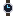

説明
①子ども 水晶の小さな板が1秒に 32768 回ふるえるのを IC で数えて、1秒を作る腕時計。
②学生 水晶振動子＋IC（樹脂のパッケージ）＋ステッピングモーター＋乾電池＋クラウンガラス＋鉄。右クリックでグリニッジ時刻。1日の狂いは ±0.2秒ほど（ぜんまいの腕時計は ±10秒ほど）。もう片方の手に別の時計を持つと2つの差、六分儀と使うと経度も測れる。
③大人 1927年、ベル研究所が部屋ほどの大きさの水晶時計を作った。1969年12月、日本の諏訪精工舎（セイコー）が世界で初めてのクオーツ腕時計「クオーツアストロン 35SQ」を売り出した。
④ガチ 32768 は 2 の 15 乗なので、IC の中の「2で割る」回路を15段つなぐとちょうど1秒になる。水晶は音叉の形に切ってあり、温度で振動数がほとんど変わらない。
作り方
使い道
（このアイテムを使うレシピは無い）